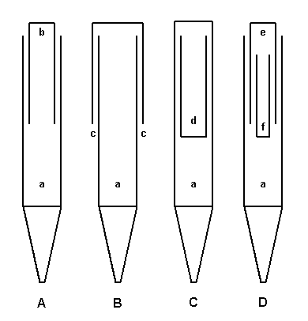

In 1910 William E. Haskell of the Estey Organ Company took out a number of patents on methods for lowering the pitch of an organ pipe without substantially increasing its length. These methods, which came to be known as �Haskelling�, involved placing a tube, closed at one end, inside or outside the body of an open or stopped organ pipe. Haskell developed several variations on this theme, some of which are illustrated in the simplified drawings below.

Figure A shows the most common form of �Haskelling�. An open metal (or sometimes wooden) pipe of normal scale a is modified by the insertion of a cylindrical metal tube b, closed at the top and open at the bottom. According to Haskell, the inside cross-section of the inner tube must be exactly half that of the outer pipe; this translates to a diameter for the inner tube that is 0.707 times the diameter of the outer pipe. Some examples, however, reportedly vary from this ratio. The inner tube extends above the main body by 1/4 to 1/3 of its length. These pipes are tuned in one of two ways:
Figure B shows an open pipe a which has been modified by the addition of a tube c on the outside of the pipe, rather than the inside. This form of construction was reportedly only used for Haskell's reedless Clarinet.
Figure C shows a stopped pipe a which has been modified by the insertion of a tube d open at the top and closed at the bottom. Using this construction, 16' tone can be produced from a pipe little more than 4' in length. It is not clear, however, if any stops of this form were ever actually built.
Figure D shows how two inner tubes, one inside the other, can be used to lower the pitch even further. Haskell maintained that the pitch corresponded to the sum of the lengths of the outer pipe and the two inner tubes.
The drawings below, reproduced from Bonavia-Hunt, show two more forms of �Haskelling�, one in a flue pipe made entirely of wood, the other in a reed pipe. Such reed pipes are rare.
Haskell basses have been used for 8', 16' and 32' octaves, and are most successful in the lower pitches. They can be difficult to voice, which probably accounts for the wide variation in opinion over their effectiveness. Haskell basses have more harmonic development and less fundamental than normal pipes, making them best suited for string tone. An added benefit is their quickness of speech, which can make them tonally more desirable than normal pipes for the bottom octaves of 16' and 32' strings, which have a tendency to be slow of speech.
Haskell's patents have long since expired, and many other builders have used his ideas. There are rumors of 18th century Spanish organs having used these types of pipes, and Adlung (1768) attributed such a thing to one Nicholas Bach around 1750. Some builders have used this approach to reduce the length of façade pipes for visual purposes, using short Haskell tubes to lower the pitch by a relatively small amount.
http://patft.uspto.gov/netahtml/srchnum.htm)
patents # 965896, 965897 and 967911.
|
Original website compiled by Edward L. Stauff. For educational use only. HaskellBasses.html - Last updated 23 January 2003. |
Home Full Index |
{kind=link}